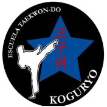
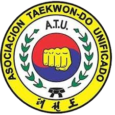

La copa koguryo es un evento deportivo organizado por la escuela del mismo nombre donde se realizan varios enfrentmientos de distintas categorías y tipos de combate, siendo estos las formas-tules, combate, habilidades especiales, salto en alto-largo y rotura de poder.
Siendo tambien que cada enfrentamiento esta regido por un importante reglamento que regula en contacto excesivo entre competidores para evitar lesiones demasiado graves y/o vayan en contra del espiritu deportivo de la escuela
También no esta de más decir que en este torneo estan invitadas otras escuelas de Taekwon-Do, ya que no se discrimina a niguna otra institución del mismo arte marcial siendo que todas comparten la pasión por compartir sus conocimientos acerca del camino que te ofrece aprender junto a nosotros